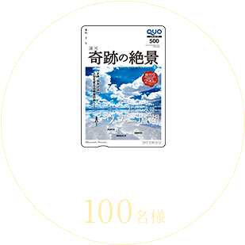

一枚の写真が人生を変えることがある
10月25日（火）創刊 創刊号特別価格：本体290円（税別） 全国書店にて毎週火曜日発売（首都圏基準）//mirapla.com/ 講談社
©Kazuyoshi Nomachi
総額15万円のギフトカードやQUOカードが当たる！
応募期間：2016年10月25日（火）〜11月24日（木）
ミラプラ『週刊 奇跡の絶景』公式Twitterアカウント(@mirapla1025)を フォローして
このページのボタンからつぶやくだけで、「JCBギフトカード」10,000円分が10名様、
『週刊 奇跡の絶景』オリジナルデザインの「QUOカード」500円分が100名様 に当たります!

あなたの行きたい絶景ポイントを選んでツイート!
行きたい！
行きたい！
行きたい！
行きたい！
行きたい！

行きたい！
プレゼントにご応募いただくにあたり、下記の注意事項をよくお読みくださいますようお願い申し上げます。